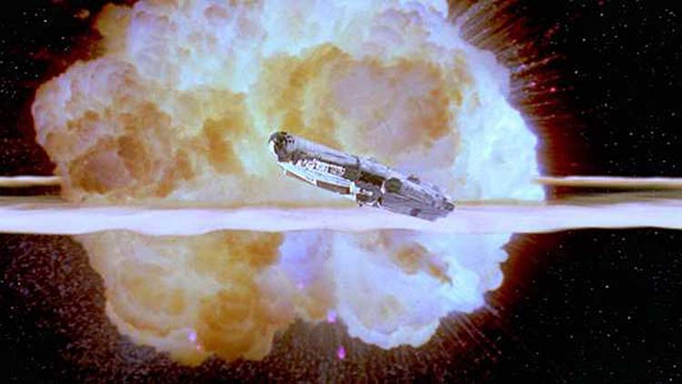

John Wiliams posant avec C-3PO (date : sûrement en 1980)
John Wiliams est un compositeur américain né à New York. Il a composé la musique de 51 films différents, dont les films Star Wars. Il a fait plusieurs études dans des école de musiques certifiées. Il peut jouer de plusieurs instruments. Il est chef d'orchestre, pianiste et compositeur.
L’Etoile noire a été détruite mais l’Empire continue d’avoir une emprise sur la galaxie. L’Empire poursuit sa lutte acharnée contre l’Alliance rebelle. Les rebelles, basés sur la planète Hoth, doivent faire face à une attaque des troupes impériales.
